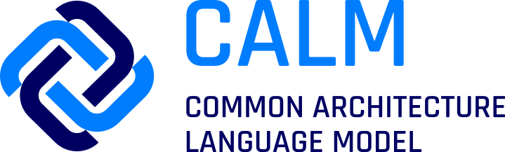
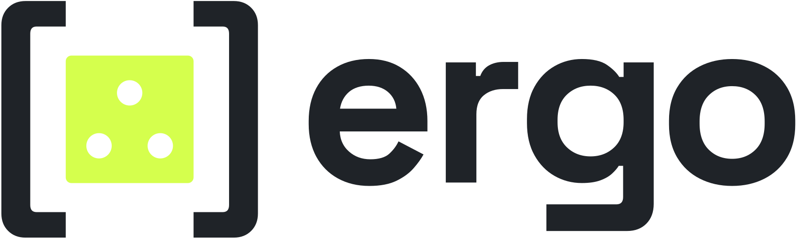

Governing the Agentic SDLC
When the architecture changes, the controls follow.
Matthew Bain and Aaron Searle
OSFF New York, 4 November 2026
From an issue in July 2025 to a FINOS project
- Jul 2025The proposal: issue 261 in FINOS DevOps Automation. Duplication, drift, fragmentation.
- Oct 2025Introduced at OSFF New York. First content lands in a new FINOS repository.
- · · ·Nearly 30 working-group calls and around half a dozen workshops, every two weeks since the August 2025 kickoff.
- Jul 2026Contributed to FINOS as an Incubating project.
- Oct 2026The first batch of controls approved and starting to be consumed. Every card versioned.
October 2026 · where we are now
A FINOS Incubating project
An open standard under the FINOS Community Specification, run in the DevOps Automation SIG. Live at sdlc-common-controls.finos.org.
Built across the industry
Maintainers from Morgan Stanley, Deutsche Bank, UBS and Kosli. Fidelity, TD Bank, JFrog, Anchore, Chainloop, GitLab and KPMG among those taking part. 87 pull requests merged.
First batch approved, starting to be consumed
Code Review (v1.0) and Version Control (v1.2) are approved by the working group, with the Insider Threat risk. Nineteen more controls have passed first reading.
Open to anyone: calls every two weeks, alternating with a three-hour workshop. sdlc-common-controls+subscribe@lists.finos.org
Eleven risks, twenty-two controls, fifteen months later
22 controls, SDLC-PREV-001 to 022, by the lifecycle phase each applies to
- 001Code Review
- 005Vulnerability Scanning: SAST
- 008Version Control
- 010Secret Detection
- 003Software Artifact Provenance
- 007Vulnerability Scanning: Dependencies
- 009Component Inventory
- 014Test Evidence Retention
- 016Test Execution and Sign-Off
- 006Vulnerability Scanning: DAST
- 012Deployment Gating
- 019Version Release Approval Gating
- 020Requirements Approval for Release
- 021Infrastructure Dependencies
- 017Service Dependency Control
- 004Requirements Repository
- 011Vulnerability Remediation SLAs
- 013System Inventory
- 015Testing Requirements
Filled: code review, the one control this talk follows to the gate, and the three risks it answers to.sdlc-common-controls.finos.org
Built by a FINOS working group. Every control maps to NIST SP 800-53r5 and, where relevant, EU DORA, NIST SSDF and SLSA.
All about risk
Every job we give code review is a risk we expect it to catch.
Named in the catalog
- SDLC-SEC-008Unauthorised ChangeCode, configuration or build artefacts changed without authority, by a malicious actor or through weak controls.
- SDLC-SEC-004Vulnerable Software in ProductionSoftware with known vulnerabilities deployed, and left running, where attackers scan for them.
- SDLC-RC-005Audit and Compliance Evidence FailureNo records, on demand, that show the SDLC governance operated as intended.
Carried by review in practice often written down as reviewer guidance and expectations
- 1A malicious change slips inA second person sees every change before it ships.Insider threat detection
- 2Defects reach productionA fresh pair of eyes catches what the author cannot see: readable, maintainable, fit for purpose.Quality assessment
- 3Tests that prove nothingGreen checks only count if the tests actually exercise this change.Testing efficacy
- 4Software that does the wrong thingThe code does what the requirement asked, and only that.Meets the requirements
- 5A big change waved through as smallSomeone identifies the risk of the change: tier 1 or tier 2, which sets the review it needs.Risk assessing the change
- 6Only one person understands itKnowledge of the code spreads beyond its author.Socialisation and awareness
We are not focusing on these risks today. If you want to help shape, define or use the controls that mitigate them, join us! sdlc-common-controls+subscribe@lists.finos.org
Code review, as the catalog writes it today
From here we focus back on the machinery: the review taking place, and evidence that it did. Six requirements, quoted.
- "The policy MUST define deterministic, machine-evaluable criteria for selecting the required review mode"
- "non-deterministic review (such as manual peer review or approved cognitive review engines)"
- "pipeline controls MUST technically block admission to the protected baseline when the required review outcome is absent, expired, revoked, or no longer bound to the current change set"
- "Review outcomes MUST be bound to an immutable identity for the reviewed content, such as a commit SHA"
- "the author of the change set MUST NOT satisfy the human-review requirement for their own change"
- And most importantly, we must evidence that it took place:"Review records MUST include the review mode, decision, reviewer identity or approved automated-review tool identity, timestamp, policy inputs sufficient to justify the selected review mode"
SDLC-PREV-001 Code Review, version 1.0, approved by the working group October 2026. sdlc-common-controls.finos.org
Where the catalog stops
The catalog says what is expected. It deliberately stops short of how to implement and enforce it.
What is expected
Shared, technology-agnostic requirements. Every institution reads the same words, and cites the same version.
The hard part
How do you enforce it on an agent?
It will never read the policy, and it will happily bypass it if given the chance.

Here is one way it could be done: by leveraging FINOS CALM.
Author: a bot. Reviewer: a bot. Merged.
Add position total endpoint #42
- review-agent[bot] approved these changes
- All checks have passed 6 successful checks
- coding-agent[bot] merged into
main
Which of your controls did this pass?
Code review? Four eyes? Change approval?
Your architecture already knows which changes are risky.
It's just trapped in a picture.
Every pull request is checked against the architecture
The rules live on the architecture as CALM controls.
What a CALM control is
A named rule written into the architecture file, next to the thing it governs. It points at the requirement it implements, here a control from the SDLC catalog, and carries its own settings.
- On the architectureapplies to every change
"controls": { "sdlc-prev-001-code-review": … } - On a nodethe Client Ledger's rule
client-ledger › "controls": { "client-ledger-human-approval": … } - On a relationshipa rule for one connection
a relationship › "controls": { … } - On a flowa rule for one business journey
a flow › "controls": { … }

the gate shows its workingAn open source library for Open Policy Agent. The policy is written as data, inside the CALM control, and every decision comes with its evidence.
report, saved on the architecture
Each decision becomes a CALM decorator: a standard way to attach facts to an architecture without editing it.
{
"type": "control-evaluation",
"target": [".../architectures/33/versions/1-1-0"],1
"applies-to": ["trade-api", "trade-api-to-client-ledger"],2
"data": {
"control": { "unique-id": "client-ledger-human-approval",
"control-id": "SDLC-PREV-001" },3
"status": "not-met",
"findings": [{4
"subject": "trade-api-to-client-ledger",
"check": "human_approved",
"description": "A human approved this change",
"cause": "absent" }],
"change": { "commit": "a27142e…", "spec": "SPEC-001" },5
"engine": { "name": "ergo", "policy-sha256": "76c558b1…" }6
}
}
- Which architecture it was decided against: version 1.1 in CALM Hub
- Which boxes and lines it is about, so the Hub can colour them
- Which rule, and the catalog control it comes from
- ergo's report, in its own words: what was checked, and why it failed
- Which change: the exact commit and its spec
- Which policy decided, by its hash
How a CALM control feeds ergo
The control's config is the ergo policy. Nothing is translated or copied.
In the architecture file, on the Client Ledger
{ "unique-id": "client-ledger",
"controls": {
"client-ledger-human-approval": {
"requirements": [{
"requirement-url": ".../sdlc-prev-001-code-review",
"config": {
"ergo": {
"subjects": {
"connection to the client ledger, changed": {
"applies_to": {
"into_the_ledger": destination = client-ledger,
"from_a_changed_node": source in the change }}},
"requirements": {
"client-ledger-human-approval": {
"subject": "connection to the client ledger, changed",
"checks": {
"human_approved": a person approved }}}}
Controls can sit on the architecture, a node, a relationship or a flow. A generic collector reads every one and merges their ergo blocks into one policy.

on Open Policy AgentThe report
| position-service → client-ledger | ✗ absent |
| trade-api → trade-store | out of scope |
Let's see it live.
An agent opens pull requests on a real GitHub repository. The architecture decides which ones need a person.
Built from open parts
What to control
The SDLC Common Controls Catalog, written once by the industry.
Where it applies
FINOS CALM: the architecture as code, the rules on its boxes, the decisions back on it as decorators.
How to decide
An open source project that checks rules written as data and says why.
The SDLC controls you just saw enforced
- SDLC-PREV-001 Code ReviewReviewed by a bot that is not the author; a person approves changes near the Client Ledger and changes to the architecture
- SDLC-PREV-004 Requirements RepositoryEvery change names an approved spec and touches only the services that spec declares
- SDLC-PREV-017 Service Dependency ControlEvery connection the code makes is in the architecture: the shortcut to the ledger was blocked
Everything you saw is real: the repository, the pull requests, the approvals, the checks and CALM Hub.
Pick one rule. Put it on one box.
Let the architecture say no.